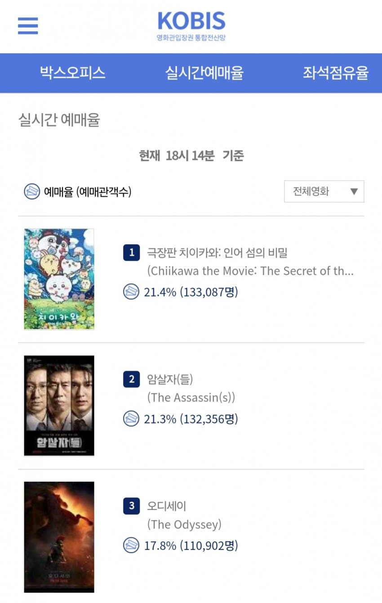

치이카와 1위ㅋㅋ

치이카와 1위ㅋㅋ
암살자들 보고왔는데 감독이 말하고 싶은게 한가득이었는지 다애매했음
더 말하면 옳그떠야
에스에스인
치이카와하면 부모들이 처음에 애들 데리고 웃으면서 들어갔다가 영화 보고 나서 비통한 표정으로 나온다던 일본인들 얘기부터 생각남
근데 재밌긴 재밌음
캐릭터 귀엽다
시사 조아
저능아(들) 컷 ㅋㅋ
먼작귀 널 좋아해
먼작귀랑 치이카와랑 그냥 한국이랑 일본 제목 차이인가
수입사인 대원이 먼작귀로 번역해서 수입했는데 극장판은 또 치이카와 그대로 들어오고 일관성이 없이 왔다갔다 하더라
ㅇㅇ
애기들 타겟으로 먼작귀로 했다가 어른들 구매파워가 훨씬 세니 그냥 원작 따라가기가 좀있는듯
인턴은 어디갔지
옵세션, 레지던트이블 상영관은 별루없고 뭔 재미대가리 없어보이는것들만 있네
먼작귀는 뭔가 귀신이름같아
치이카와 그냥 귀여운 캐릭터 아닌가 했는데 리뷰보니까 생각보다 꽤 많이 어둡던데 담배냥이 어린이 스킨?
우 우와 와 우와 우와와 타쿠타쿠 챠오 우와와와 우와 와이와이 토레리 우와와 와이와이 타라치로
어쌔신들 ㄷㄷ
오늘 암살자들 기대없이 보고 왔는데 평작 이상이었음
우나야하우라우라
고작 13만으로 예매율 20% 따잇하는 영화시장이라니
킹갓카와 ㄷㄷ
레지던트 이블 별롷ㄴ다